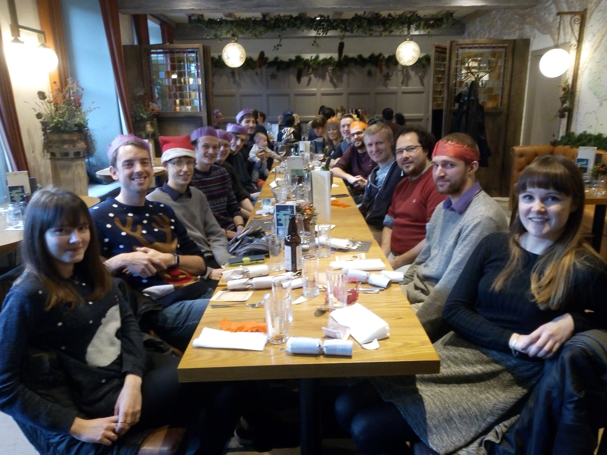

From 2020 to 2025, I was a Research Fellow in St Andrews. In that time, my work primarly focused on solar coronal heating and global modelling of the coronal magnetic field. My position was funded by Consolidated Grants from the Science and Technology Facilities Council (STFC).
For two academic years, from 2023 to 2025, I was the convenor of the Solar & Magnetospheric Theory Group's weekly meetings.

In 2016, I started my PhD in Applied Mathematics, within the Solar & Magnetospheric Theory Group in St Andrews. In 2020, I submitted and defended my thesis, and later graduated.
During my PhD, I was supervised by Alan Hood and Clare Parnell. My doctoral research was chiefly concerned with the solar coronal heating problem, as was intended in the original proposal, but I also developed an interest in magnetic reconnection.
As a PhD student, I was a Carnegie Scholar. As such, I benefited from the support, financial and otherwise, of the Carnegie Trust for the Universities of Scotland, for which I remain grateful.
As an undergraduate, I was privileged to study Mathematics in St Andrews. While doing so, my interests in magnetohydrodynamics (MHD) and in solar physics began with my final-year Honours dissertation, which was supervised by Thomas Neukirch. Similarly, I obtained my first experience of academic research while undertaking a summer project with Mark Chaplain, on modelling interactions between hosts and parasitoids.